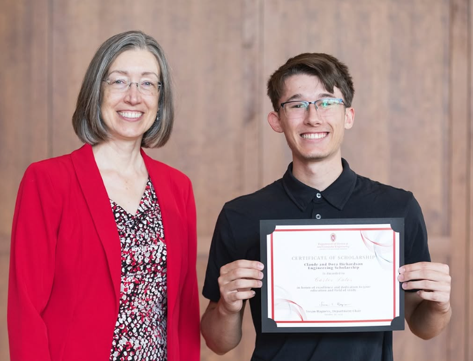
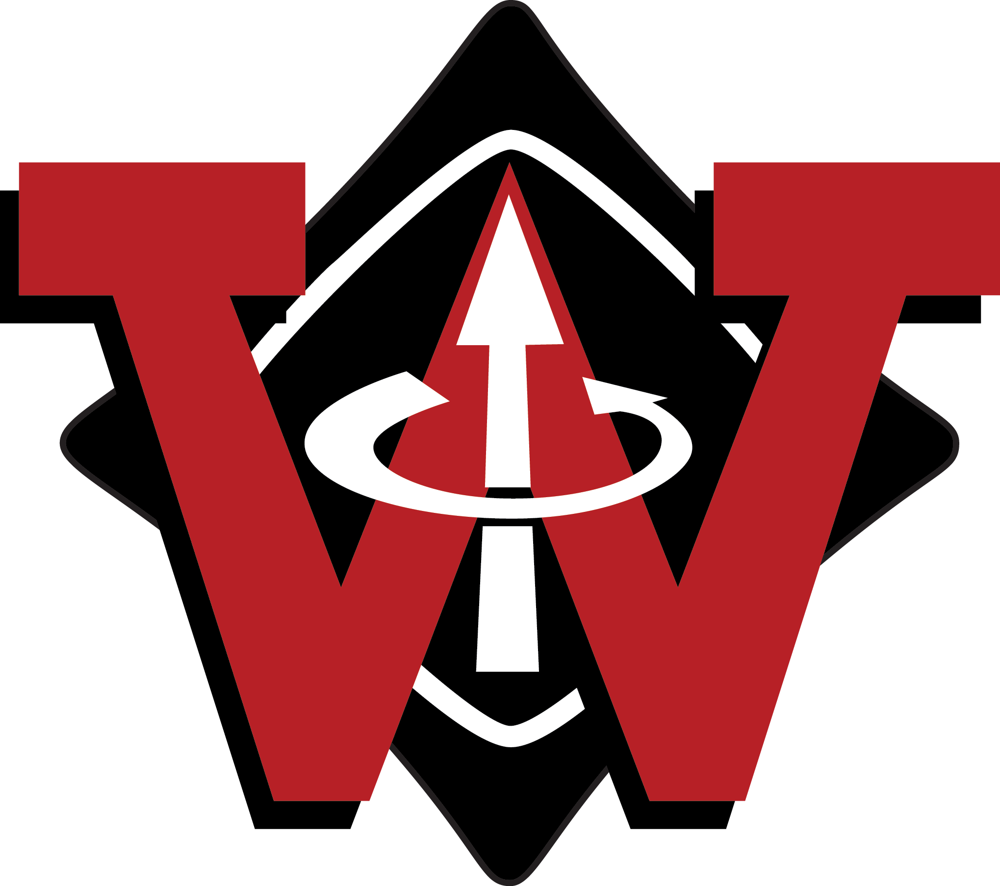

School
University of Wisconsin-Madison
I am a second year student at the University of Wisconsin-Madison studing Computer Engineering and Computer Science. I hope to use my schooling to achieve my goal of continuing to innovate the future of technology. I hope to one day be a part of a team that helps innovate semiconductor technology, leaving a lasting impact on the world around me.
Some relevant classes I have taken:
- ECE 352: Digital System Fundementals
- Logic components, Boolean algebra, combinational logic analysis and synthesis, synchronous and asynchronous sequential logic analysis and design, digital subsystems, computer organization and design.
- COMP SCI 400: Programming III
- Balanced search trees, graphs, graph traversal algorithms, hash tables and sets, complexity analysis.
- ECE 230: Circuit Analysis
- Ohm's law, Kirchhoff's laws, resistive circuits, nodal and mesh analysis, superposition, equivalent circuits using Thevenin-Norton theories, op amps and op amp circuits, first-order circuits, second-order circuits, sinusoidal steady state, phasors, RMS value, complex power, power factor, mutual inductance, linear and ideal transformers, ideal filters and transfer functions.
- ECE 353: Introduction to Microprocessor Systems
- Introduction to architecture, operation, and application of microprocessors; microprocessor programming; address decoding; system timing; parallel, serial, and analog I/O; interrupts and direct memory access; interfacing to static and dynamic RAM; microcontrollers.
- ECE 315: Introductory Microprocessor Laboratory
- Introduction to PCB design using Altium Designer.
Extracurricular Activities
Wisconsin Racing | Formula SAE
Wisconsin Racing is an engineering club at UW-Madison that designs, builds and tests an electric high-downforce, lightweight, formula style race car. In the fall of 2025, I joined the electrical team to gain more exprience building PCBs and designing physical electrical components. I am currently working on a Differential Pressure Sensor board that will live under the car to measure and collect pressure difference data for the aerodynamic team.
Institute of Electrical and Electronics Engineers | UW-Madison Chapter
UW-Madison's IEEE chapter is a club made up of mostly Electrical Engineers and Computer Engineers. The main goal of the club is to expose undergraduate engineers to more application experience. Since the fall of 2024, I have learned about different jobs in industry, different industry standards, and how to apply what I have learned in my classes into physical projects.
